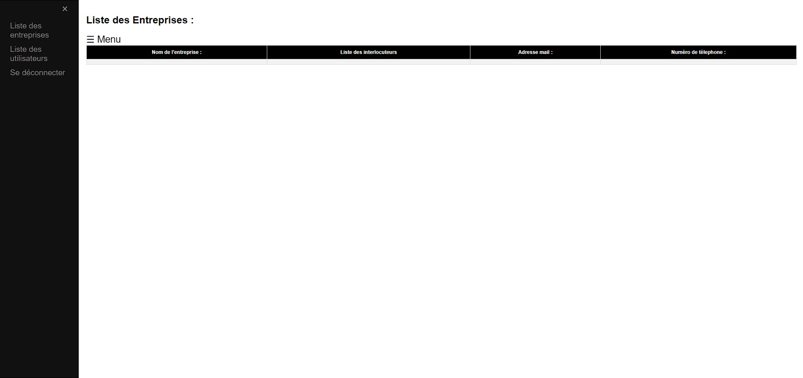

Je m'appelle Merhdaoui Mohamed et j'ai 20 ans. Actuellement, je suis étudiant en deuxième année de BTS SIO option SLAM à l'école Charles de Foucauld. Cette formation est axée sur les Solutions Logicielles et les Applications Métiers.
Depuis toujours, je suis passionné par l'informatique et les nouvelles technologies en général. C'est d'ailleurs ce qui m'a poussé à poursuivre mes études dans ce domaine, après avoir obtenu mon bac général avec une spécialité en mathématiques et physique-chimie
Je suis très motivé à l'idée d'apprendre et de me perfectionner dans ce domaine passionnant. Je suis convaincu que cette formation me permettra d'acquérir les compétences et les connaissances nécessaires pour réussir dans ce secteur en constante évolution.
Le Brevet de Technicien Supérieur aux Services Informatiques aux Organisations, s'adresse à ceux qui souhaitent se former en deux ans aux métiers d'administrateur réseau ou de développeur. Pour par la suite intégrer directement le marché du travail ou continuer des études, dans le domaine de l'informatique.
Voici les débouchés avec un BTS SIO SISR: - Technicien de production - Technicien d’infrastructure - Technicien réseau et télécoms - Technicien systèmes et réseaux - Administrateur systèmes et réseaux - Support systèmes et réseaux - Pilote d’exploitation - Informaticien support et déploiementSavoir deployer un site internet html css
Savoir rendre un site dynamique
Savoir programmer en front end
Savoir deployer un site internet avec une basse de donnée
Pouvoir modifier une image et faire des miniatures et icones
Savoir prototyper un site internet (maquette)
Savoir faire du montage vidéo
Voici mes différents projets réalisé lors de mes 2 années de bts :
Realisation TP7
Pendant mon stage chez Ceffage, j'ai été impliqué dans la création d'un dashboard destiné à enregistrer les entreprises partenaires. En collaboration avec les équipes techniques, j'ai contribué à la création d'un outil dédié à l'enregistrement des entreprises partenaires, offrant une interface conviviale et fonctionnelle : Structuration avec HTML : J'ai élaboré la structure du dashboard en utilisant des balises HTML, permettant de saisir et d'afficher les informations nécessaires sur les entreprises partenaires.J'ai utilisé des feuilles de style CSS pour rendre l'interface du dashboard esthétique et ergonomique, assurant ainsi une expérience utilisateur optimale.
Voici des photos du dashboard réaliser
Pendant mon stage chez ......, j'ai été impliqué dans la création ...... En collaboration avec les équipes techniques, j'ai contribué à la création d'un outil dédié à l'enregistrement des entreprises partenaires, offrant une interface conviviale et fonctionnelle : Structuration avec HTML : J'ai élaboré la structure du dashboard en utilisant des balises HTML, permettant de saisir et d'afficher les informations nécessaires sur les entreprises partenaires.J'ai utilisé des feuilles de style CSS pour rendre l'interface du dashboard esthétique et ergonomique, assurant ainsi une expérience utilisateur optimale.
Voici quelque screen du projet réaliser
La veille technologique consiste à s’informer de façon systématique sur les techniques les plus récentes et surtout sur leur mise à disposition commerciale et ainsi rester informer sur les nouveautés. Je réalise ma veille à l’aide de mots-clés et de flux RSS.
Feedly est un agrégateur de flux RSS développé par la société DevHD, basée à Bucarest, Roumanie.
Krebs on Security : Tenu par Brian Krebs, ce site explore de nombreuses cybermenaces et est réputé pour ses analyses approfondies.
The Hacker News : Un site qui couvre une gamme de sujets liés à la cybersécurité, y compris les vulnérabilités, les piratages et les tendances émergentes.
Cyberscoop : Offrant des actualités sur les politiques de cybersécurité, les menaces émergentes et les événements pertinents dans le domaine.
Le domaine de l’informatiques que je vais cibler est la Cybersécurité.
2023
2023
2023
2023
Pour effectuer ma veille juridique, je consulte de manière journalière tous les forums, sites d’actualités technologiques, de droits et de cybersécurité.
Pour ce faire, j’utilise différentes sources telles que : OCDE (Organisation de Coopération et de Développement Économiques), ec.europa.eu (Commission européenne), CNIL (Commission Nationale de l’Informatique et des Libertés), ANSSI (Agence Nationale de la Sécurité des Systèmes d’Information).
Mais également, j’utilise aussi des outils tels que les flux RSS (Legalis), les newsletters, les réseaux sociaux et les lives conférences de cybersécurité.